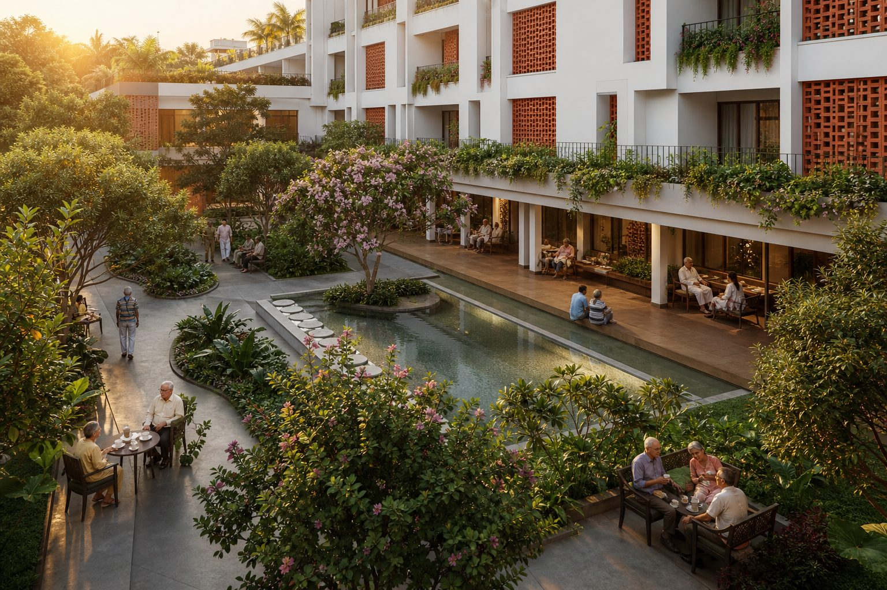
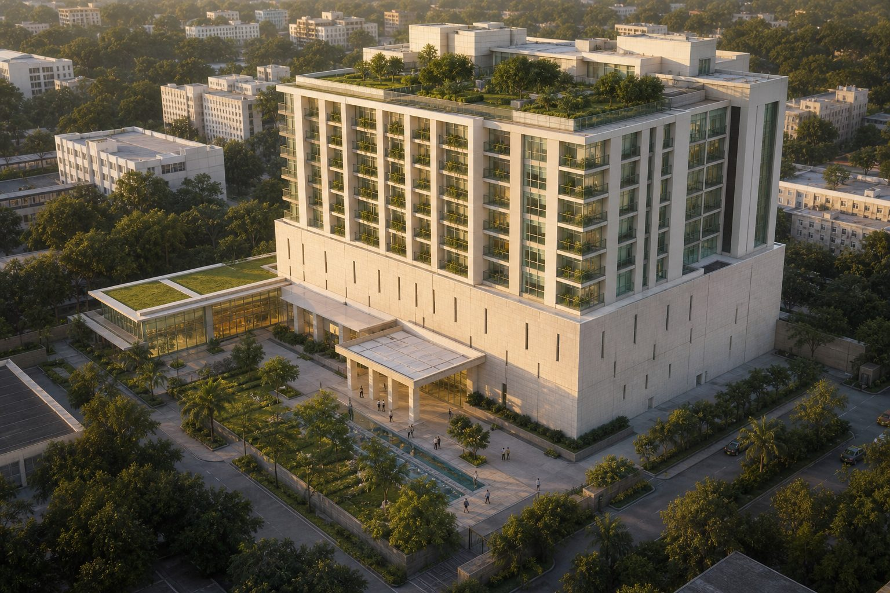
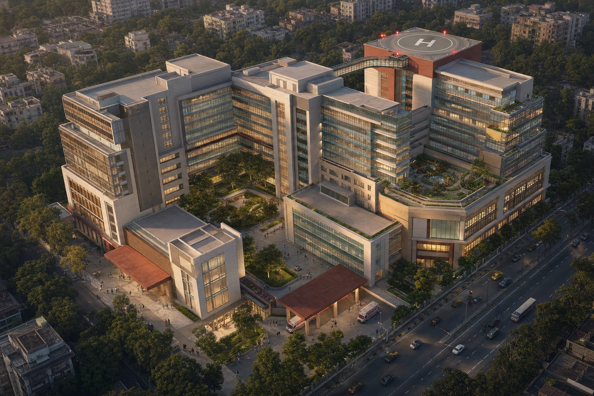
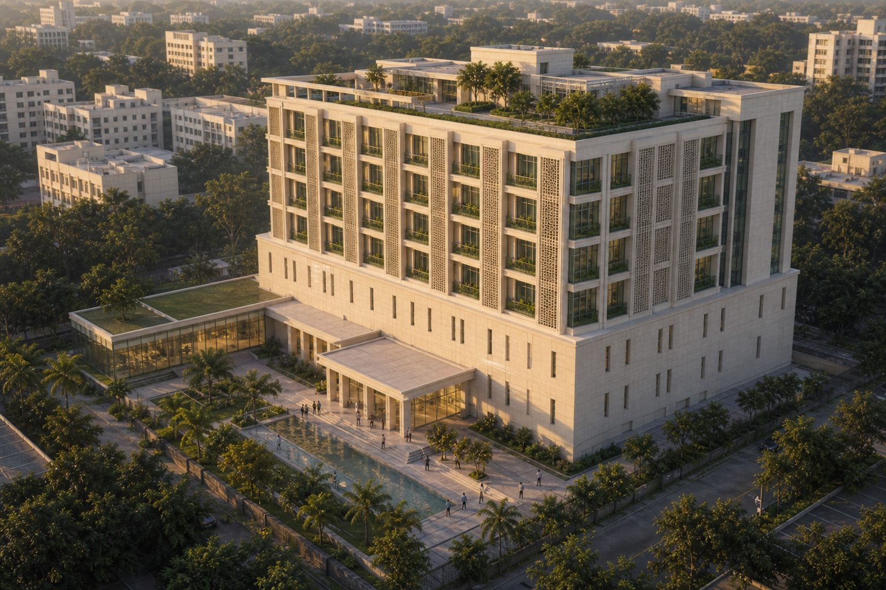
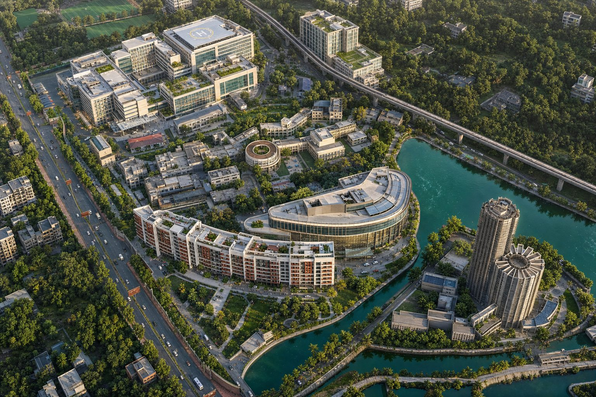

Amader Bari
Contemporary Bengali senior living · 220–250 residents · B+G+7 · Jadavpur
Four linked projects on the KPC Jadavpur campus and beyond — senior living, oncology, tertiary care, and a self-funded university — submitted for the kind consideration of the Government of West Bengal.
MD, FACS, FAAOS, FICS · Founder & Chairman, KPC Group · Orthopaedic surgeon, entrepreneur, philanthropist. West Bengal’s first private medical college was delivered on this campus under PPP; this proposal continues that work.

Contemporary Bengali senior living · 220–250 residents · B+G+7 · Jadavpur

270 beds · robotic surgery, plasma therapy · B+G+7 · Jadavpur

490 beds · cardiac, paediatric, trauma + helipad · Kolkata

Science, education & research · ₹200 Cr fully self-funded · B+G+6

Photoreal isometric of the existing KPC Medical College campus in Jadavpur — the reference that now sits on the university slide, replacing the black-and-white site plan.
Compressed web cut of the senior-living campus film (27s). Play it here; the original high-bitrate master stays in the project archive.